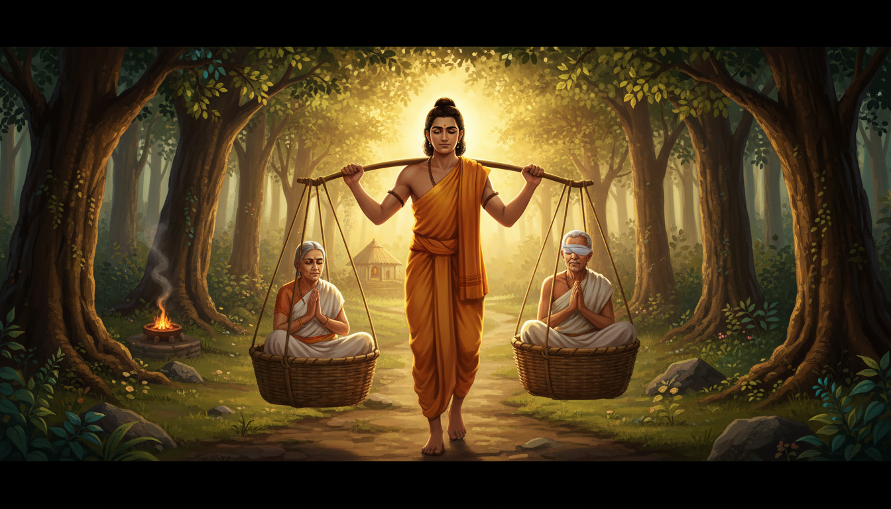

There is a category of karma that almost no puja in the market addresses, and it is probably the most common one of all: harm done by accident.

You did not intend it. You were driving and someone stepped out. You shouted at a child who then fell ill, and you have never stopped wondering. You cleared a piece of land and the nest was already there. You signed the paper that ended someone's job. You were aiming at something else entirely. The arrow left the bow and found a boy collecting water in the dark.
The tradition has a precise name for this. It calls it shabda-bhedi — the arrow that is aimed by sound, not by sight. And it has one story that it tells, over and over, to explain what such an arrow does to the one who looses it, and what can be done afterwards. That story is Shravana Kumara's.
It is also, not coincidentally, the story that gives the twenty-second nakshatra its name — Shravana, the hearing one — and it is the reason the remedial material attached to that nakshatra is unlike anything else in the nakshatra canon. Most nakshatra remedies are built to strengthen a weak planet. Shravana's remedies are built to close a debt that was never intended.
This is the working manual: who Shravana was, why his death is an astrology story and not only a Ramayana episode, what the two-pole yoke actually encodes, the specific unfulfilled-water debt his parents left behind, and the four rites that the tradition still performs for it — including the ones almost nobody teaches.
The Boy With the Bamboo Pole
The Ramayana gives him a bare paragraph and it is enough.
Shravana Kumara was the son of Shantanu and Jnanavanti — some regional tellings call her Malaya. Both were hermits. Both were blind. They had grown old in the forest, and their one remaining desire was to complete the four great pilgrimages — the char-dham — before the body failed. Not for merit. The text is specific: to purify the soul.
They could not walk it. They had no wealth to hire a cart. And so their teenage son built the only vehicle they could afford. Two baskets. One bamboo pole — a vamsha-danda — laid across his shoulders, a basket suspended from each end, one parent in each, and his own body as the axle between them.
Read that arrangement as an engineer before you read it as a devotional image. A pole carried on one shoulder with equal loads at both ends is the only configuration in which a single walking body can carry two non-walking bodies without either one tilting. Move one basket inward and the whole thing yaws. Make one basket heavier and his gait breaks down within a hundred steps. The design is not sentimental. It is balance or nothing.
He walked the whole of it that way. Not a short vow. Four dhams, months of road, in the heat, with two blind old people who could not even see the country they had come to purify themselves in.
The Lake, the Sound, the Arrow
They stopped near a lake in the Kosala country — local tradition puts the spot at Sarvan in Unnao district, or alternatively near Darvan Lake in Ambedkar Nagar, some eighty kilometres from Ayodhya, where a site called Shravan Dhaam is now maintained in his memory.
His parents were thirsty. He left them under a tree, took the pot, and went down to the water.
King Dasharatha was hunting in the same forest. He heard a sound at the lake — the gurgle of water being drawn, which in the dark he took for an elephant drinking. He was a shabda-bhedi: a bowman of the class that shoots at a target located only by sound. He loosed.
The arrow struck a boy.
When Dasharatha waded across and turned the body over, Shravana told him what he had done and, dying, made one request: take the water to my parents, and tell them what happened. He did not curse the king. He asked him to finish the errand.
Dasharatha carried the water. When the blind hermits heard the footsteps and asked why their son had sent a stranger, he told them the truth. They died of it — the Ramayana says they could not bear the shock, and they died without drinking the water he had brought. Wikipedia's summary of the episode is blunt about that detail and it is the detail that matters most for the ritual work: the water was carried all the way and never drunk.
Before they died they cursed him. They acknowledged it was an accident — "despite acknowledging that it was an accident" — and cursed him anyway, to suffer putrashoka: grief for a son. It came true decades later, when Dasharatha died in Ayodhya unable to bear the exile of Rama, his eldest and most beloved.
Why This Is an Astrology Story
Here is the part the devotional retellings leave out, and the reason the story is load-bearing for Jyotisha rather than merely edifying.
Shravana is the twenty-second nakshatra, spanning 10°00′ to 23°20′ of Makara. Its ruler is the Moon. Its deity is Vishnu. Its symbol is three footprints — and the three footprints are Vishnu's, the three strides of Trivikrama, the god who measured the worlds in three steps. It is called Thiruvonam in Tamil and Malayalam. It is the birth star of Venkateswara of Tirupati, and Onam — Kerala's largest festival — is fixed to this nakshatra in the month of Chingam, not to a date. The name-syllables for a child born in it are Khi, Khu, Khe, Kho.
And the shakti — the specific power the nakshatra is said to hold, in the classical listing — is Samshleshaka: the power to connect, to bind together, to join what is separate.
Sit with that against the story. The nakshatra whose essential power is joining is named after a boy whose entire life's work was a pole that joins two people, and whose death produced an unbridgeable separation — two old people dead of grief, a king cursed, a dynasty broken. The tradition did not name the nakshatra after his death. It named it after his act.
Which tells you what the remedy is for. Not for weakness. For the join that failed.
The Ear Is the Organ
Shravana means hearing. The nakshatra governs the ear, and this is where the doctrinal precision of the story becomes a technique.
Mark the symmetry, because the tradition marked it deliberately. The harm entered through the ear. Dasharatha did not see Shravana; he heard a sound and believed it. The wound was inflicted by a misheard signal. And the remedy the tradition assigns to this nakshatra is also auditory — mantra, listening, the whispered word, the vow taken by hearing rather than by seeing.
This is not decoration. It is the operating principle: a karma that came in through the ear is discharged through the ear. You do not fix a shabda-bhedi wound with a gemstone. You fix it with sound — the right sound, correctly transmitted, into a body that is willing to receive it.
There is a further layer. Shravana's parents were blind. The father who could not see his son's face, the mother who could not see the country she was purifying herself in — they navigated entirely by his voice and his footfall. When the voice stopped, they were stranded in a world with no information in it. Any chart where the Moon — the nakshatra's ruler, the planet of the mind and of feeling one's way — sits in Shravana carries this signature: a mind that navigates by sound, that trusts what it hears, and that can be wrecked by a single misheard thing.
In practice that reads as: the person who was told one sentence in childhood and organised a life around it. The one who cannot stop replaying a phone call. The one whose deepest injuries are all things that were said. The one who was, or who caused, an accident that no court would call a crime.
The Moon in Capricorn Problem
Shravana sits inside Makara — Saturn's sign. So the nakshatra's Moon is a Moon held inside Saturn: the mind held inside weight, duty, endurance, and delay.
This is the exact configuration of a life spent carrying. Not a life of ease interrupted by burden, but a life whose basic architecture is a pole across the shoulders. Elder care that arrived too early. A sibling's debt. A parent's illness in one's twenties. A family that treats one child as the axle. Shravana natives are frequently the ones who carry, and are not carried — and the pathological form of it is a person who cannot put the pole down even when both baskets are empty, who keeps walking the road long after the pilgrims have died.
There is a second, harder signature. Because Saturn delays and the Moon needs nourishment, a Shravana Moon in Makara very often produces the postponed grief: the funeral that was handled efficiently and never actually mourned. The water that was carried to the parents and never drunk. That image is the exact diagnosis, and the rites below are built to reverse it — to make the water get drunk.
The Four Quarters
For precision work, the four padas of Shravana fall in four different navamsa signs, and the flavour of the debt changes with each:
- Pada 1 (10°00′–13°20′ Makara) — navamsa Makara. Double Saturn. The debt is inherited: ancestral duty, family business, the caretaker role assigned at birth.
- Pada 2 (13°20′–16°40′) — navamsa Kumbha. Saturn again, but through the collective. The debt is to a group — a community, a workplace, a cause the person serves past exhaustion.
- Pada 3 (16°40′–20°00′) — navamsa Meena. Jupiter's sign. The debt is devotional and often invisible: service given to someone who could not receive it, love offered to the dead.
- Pada 4 (20°00′–23°20′) — navamsa Mesha. Mars. The debt is violent in origin — accidents, surgeries, sudden severances, harm done in anger or in speed.
Pada 4 is the one that most often arrives in a consultation as "I don't know why I feel guilty, nothing happened" — and then, on being asked, something happened.
The Two-Pole Doctrine
The technical content of Shravana's story, the thing you can actually build a practice from, is the pole. Three rules are encoded in it, and every rite described below is one of those three rules turned into an action.
Rule one: the load must be equalized, not minimized. He did not reduce the weight; he distributed it. A remedy that tries to make a burden disappear is not a Shravana remedy. A remedy that makes it carryable is. This is why the tradition prescribes physical carrying — pots, poles, water — rather than purely mental prayer. The body has to do the geometry.
Rule two: the carrier must be in the middle. Shravana was between his parents, not in front of them and not behind. Every corrective in this nakshatra's material puts the seeker in the middle position — between two parties, two families, two generations — because the Samshleshaka shakti only functions from the midpoint.
Rule three: the journey, not the arrival, is the offering. They never reached all four dhams. He died at a lake. The tradition does not treat the vow as failed. The walking was the merit. This is the doctrinal permission that makes the whole practice possible for ordinary people: an incomplete pilgrimage, honestly undertaken, counts.
The Kavadi Descent
Tamil tradition holds that the kavadi — the decorated burden-pole carried by devotees of Murugan, balanced with pots of milk at either end, borne on the shoulders for kilometres in vow — descends from exactly this arrangement. The resemblance is not casual: same architecture, same two balanced loads, same shoulder, same pilgrimage, same understanding that the weight is the prayer.
Whatever the historical relationship, the ritual grammar is identical, and it is available. That is the point of mentioning it: this is a living, unbroken practice, not a reconstructed one. You are not reviving a dead rite when you carry two pots on a pole. You are joining something that has been done continuously for a very long time.
The Rites
Four working forms. They are graded: the first is for anyone with a Shravana Moon; the second is for accidental-harm karma; the third is the one almost nobody teaches and it is the most important; the fourth is for those whose wound is specifically auditory.
1. Shravana Nakshatra Shanti
The standard nakshatra pacification, done on the nakshatra's own day.
When: on a Monday (Moon's day) when the Moon transits Shravana, or on Thiruvonam in the Malayalam/Tamil calendar. The strongest window in the year is the Thiruvonam of the Chingam month — the Onam nakshatra — because the whole culture's attention is on that star at that moment.
Materials: white — white rice, white flowers, curd, milk, a white cloth. A Vishnu image or salagrama, since Vishnu is the adhidevata. Two small copper pots (this is not optional — see the note below). Sesame oil lamp.
The form: bathe before sunrise. Set the two copper pots on either side of the Vishnu image — one filled with water, one empty. The empty one is the pot Shravana carried and never delivered. Light the lamp between them, in the middle position. Recite Vishnu's gayatri — Om Narayanaya vidmahe, Vasudevaya dhimahi, tanno Vishnuh prachodayat — 108 times, and with each round pour a spoon of water from the full pot into the empty one. Do not rush the transfer; the ritual is the transfer. At the end, the water in the formerly-empty pot is given to a thirsty person to drink, or poured at the root of a tree that bears fruit. Feed someone who is hungry and alone, on that day, before you eat.
The doctrinal logic is exact: you complete a water-offering that was interrupted. You finish Shravana's errand.
2. The Shabda-Prayashchitta — for harm done without intent
For the driver, the surgeon, the manager, the one who cleared the land. For anyone carrying guilt over an accident, a death, a dismissal, a harm whose intention was absent but whose fact is real.
The tradition's position is uncomfortable and useful: accident is not innocence. Dasharatha's parents conceded the accident and cursed him anyway. Karma in this system does not run on intent; it runs on contact. So the remedy is not to argue innocence — it is to discharge contact.
The form: identify the harmed being — by name if human, by species and place if not. On the dark moon (Amavasya) of any month, at dusk, take water in a copper vessel and stand facing the direction in which the harm occurred. Speak the harm aloud, plainly, once — no euphemism, no self-defence, no explanation of your intention. Then offer the water to the earth, saying: "This is the water that was not delivered. Drink." Do this for eleven consecutive dark moons, and on each occasion also give food to someone who did not ask for it — a stray animal, a beggar, a stranger.
Do not perform this rite if what you did was intentional. It is a rite for accidents, and using it on a deliberate act converts it into an attempt to purchase silence. The tradition would regard that as making the karma heavier, not lighter.
3. Jala-Dana for the Unfulfilled Dead
This is the one that is almost never taught, and it is the heart of the matter.
Shravana's parents died without drinking the water. They died of grief, in thirst, with the water in a stranger's hands. In the logic of the shraddha system this is a specific and terrible condition: a death with an unfinished offering. The traditional pitru rites assume the deceased received their water. These two did not.
The claim embedded in the Shravana material — and it is a claim the tradition makes consistently elsewhere — is that a soul that died with an unfulfilled thirst attaches to the living who failed to fulfil it. Not as a ghost. As a weight on the carrier. This is the exact phenomenology of the Shravana native who cannot put the pole down: they are carrying someone who was never given their water.
The form: this is a pitru rite with one change. On Pitru Paksha Amavasya, or on the death anniversary of the person, perform the standard tarpana — but afterwards, place a full copper vessel of water and a leaf of tulsi at your door, uncovered, overnight. In the morning, before speaking to anyone, take it out and pour it at the base of a peepal or banyan tree, saying the person's name once and the words: "The water has come. Drink, and go."
Then — and this is the part that makes it medicine rather than gesture — feed a blind or disabled person, or contribute to their care, within that fortnight. Shravana's whole life was the care of two blind people. The rite does not close by words. It closes by doing the thing he did, for someone who cannot repay you.
4. Karna-Diksha — the Listening Vow
For the auditory wound: the sentence that ruined a childhood, the voice that cannot be forgotten, the slander that was heard rather than seen, the diagnosis delivered badly, the phone call at an hour when phone calls are never good.
Because shravana governs the ear, and because the harm came in by hearing, the corrective is a re-training of the organ. The tradition calls the transmission karna-diksha — initiation by the ear.
The form: choose one Vishnu mantra and take it from one living person, spoken into your right ear, once, in person. This transmission is the rite; do not substitute a recording, and do not substitute reading. Then, for twenty-one days, recite it only at the two thresholds of sleep — immediately on waking, before the feet touch the floor, and immediately before sleep. Never aloud in argument, never as a demand, never for a result. The vow is listening, not speaking: on each of the twenty-one days, also sit with one person and let them speak for ten minutes without your reply.
That last clause is the actual remedy. In the Shravana configuration the damage is always a failure of reception — a signal misread, a message not delivered, a voice that was not heard in time. The cure is the practice of hearing accurately. The mantra steadies the instrument; the ten minutes of silence calibrates it.
The Working Form
If you are going to do one thing only, do this — and do it on a Monday when the Moon is in Shravana, or on Thiruvonam.
Prepare. The night before, assemble: two copper pots, a bamboo stick long enough to rest across both shoulders with a pot hung from each end, white rice, white flowers, a sesame-oil lamp, and a Vishnu image or a salagrama. Take no salt after sunset.
At sunrise. Bathe. Fill one pot with clean water. Leave the second empty. Hang the full pot on one end of the bamboo and the empty pot on the other. Lay the pole across your shoulders, in your own house, and stand still in it for the length of one mala — 108 breaths, counted on the fingers, not on a counter. The standing is the whole rite. Nothing is said. What is being done is that your body learns the geometry: two ends, equal, one carrier, in the middle.
Then set the pole down and place the two pots on either side of the Vishnu image. Light the lamp between them, in the middle position. Recite the Vishnu gayatri 108 times, transferring one spoonful of water from the full pot to the empty one on each round.
Close. Give the transferred water to a thirsty person — or, if you cannot, to the roots of a fruit-bearing tree. Feed one person who is blind, disabled, or utterly alone, and eat nothing until they have eaten. Say the name of anyone you have harmed by accident, aloud, once. Do not explain yourself.
The night. Place a full copper vessel of water with a tulsi leaf at the door, uncovered. In the morning, before speaking, pour it at the base of a peepal or banyan tree.
Repeat only on the nakshatra day, for eleven months, and stop. Do not extend it. A vow that never ends becomes the burden it was meant to lighten — and that is the specific failure mode this nakshatra produces in its natives.
What This Is Not
It is not a forgiveness technique, and it will not produce the feeling of being forgiven. The Shravana material is unusually cold on this point: Dasharatha did everything correctly — he carried the water, he told the truth, he offered himself to the parents' grief — and the curse still landed, and he still died of it. What the rites change is not the past and not the sentence. What they change is whether the water gets drunk.
That distinction is the whole practice. In the story, the water is carried the entire distance and never drunk, and that is what kills everyone. Two blind people die of thirst with a full pot beside them. A king dies of a grief he saw coming for thirty years. A boy dies at a lake doing an errand of pure love.
The vow exists to make sure the water is drunk — by you, in your own life, before the pot is set down for the last time. Shravana's merit was never the four dhams. It was the walking, and the pole, and the fact that for however many months it took, two people who could not see were not alone and were not thirsty.
That is achievable. It is the one thing in this story that is completely achievable, and it is the reason the nakshatra carries the name of the boy rather than the name of the king.
Sources
No source URLs were returned by NotebookLM for this run.